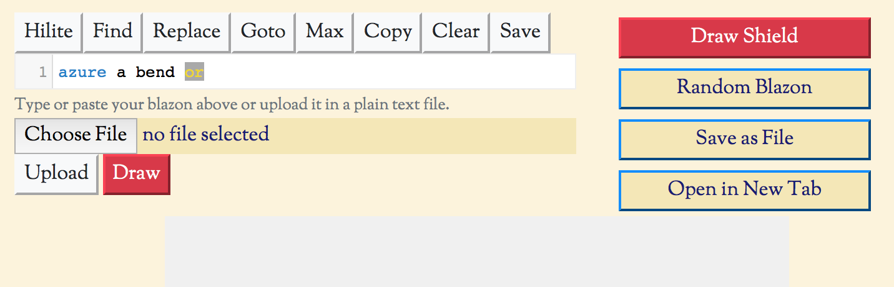

This is the most visited part of the site and allows the creation of shield images just by typing in a blazon. For simple use, just type in your blazon into the text box and click the "Draw Shield" button. Your shield should appear below, along with information about it and any error messages or warnings.
You can also paste a blazon that you have found elsewhere into the textbox; however longer blazons may contain errors that are hard to track down. It might be better to start with a simple shield blazon and add further parts one by one. You can "comment out" parts of the blazon by enclosing them in brackets,1 and remove them once the basic blazon is being drawn correctly.
If you are looking for inspiration then just click the "random blazon" button - this will take you to random blazon page (the button's existence here is a historical holdover - the random page is also available from the "create" menu). For more information on creating random blazons see this page in the user guide.
To save your work, or download it for use elsewhere you can click the "save as file" button. This will create an image file saved on your computer in your normal downloads folder. By default it will be a PNG file, 750 pixels wide called "shield.png". You can change the size and type of image using the drawing options, which are described in much greater detail here.
Finally, if you are particularly pleased with your creation then please submit it as a suggestion for the gallery pages. Once you have created and drawn your shield click on the "Submit to Gallery" button. You can add extra information if you want to, but this is not necessary, and you do not need to provide an e-mail address or any personal information.
There are many other features of the create page that can really help you get the most out of your blazonry. These are described in a more detailed set of pages here.
1) There are other ways to comment out parts of the blazon using program code style comments, see advanced use - the editor.